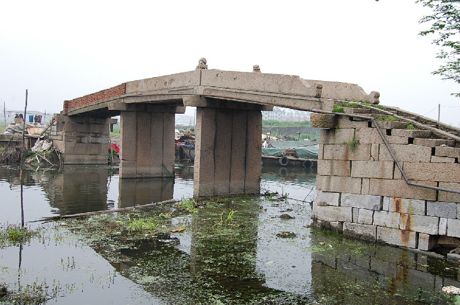

嘉兴市文物保护网 · 市级文物保护点 · 2020-11-09 · 原文

徐王村张家桥位于嘉兴市南湖区解放街道凌塘社区（原徐王村），塘桥东侧。桥始建年代不详，根据其形制推断为清代桥梁。系三孔有栏梁式石板桥，南北横跨张家桥港，桥全长24.5米，宽2.1米，桥距水面高2.9米，桥柱由4块条石竖立组成，桥面由4块长条石并列组成，上有栏板和2个狮子形望柱，南北落坡分别有石阶10级和8级，桥额刻有“重建张家桥”，东、西两侧桥联分别为：“三星荡漾慈云饶，雨水□□□□缘”和“卧波西街花泾水，跨岸东迎□□□”，桥身刻有花草纹。张家桥造型美观，是徐王村的重要历史建筑之一，具有一定的历史和艺术价值。2009年公布为嘉兴市文物保护点。